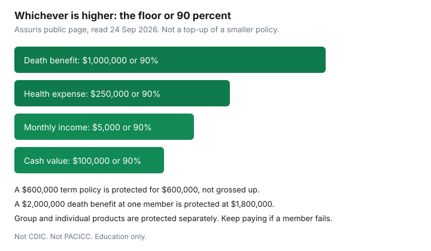

Insurance · Canada
Assuris Protection Explained for Canadian Life and Health Policies: Limits That Actually Matter
Assuris protects Canadian policyholders if a member life and health insurance company fails. It is not deposit insurance, and it is not the fund that responds when a home or auto insurer fails. The protection is automatic when you are a Canadian citizen or resident and you bought the policy from a member. You do not apply for it. The dollars that matter are the published floors: death benefit, health expenses including critical illness, monthly income, and cash value. Above those floors the guarantee is 90 percent, which means a very large policy at one company can leave a slice unprotected if that company fails. This page is those limits, the group-versus-individual split, and what to do on the day a failure is announced. It is education. It is not a reason to buy a policy you do not need, and it is not a prediction that a company will fail.
Disclosure: This page is education. There is no natural affiliate offer. Saving Optimizer does not claim a partnership with Assuris or any insurer. We do not sell policies. Limits below were read on Assuris’s public pages on 24 Sep 2026 and can change. Confirm the current page before you rely on a dollar.
Key takeaways
- Assuris protection is automatic for policies bought in Canada from a member life and health insurer, if you are a Canadian citizen or resident. You do not file a claim to “join.”
- Published floors, using whichever is higher against 90 percent of the benefit: death benefit $1,000,000, health expense $250,000, monthly income $5,000, cash value $100,000. The same $100,000 or 90 percent pattern applies to accumulated value and segregated-fund guarantees.
- Assuris says protection applies separately to individual and group products, and separately at each member company. Do not add a workplace certificate to a personal policy and assume one floor covers the sum.
- If a member fails, keep paying premiums. A lapsed policy is no longer protected. Wait for transfer instructions. Do not surrender in a panic.
- CDIC insures eligible bank deposits. PACICC responds to many property and casualty failures, with its own per-policy caps. Mixing the three names produces the wrong plan.
- Diversifying a very large benefit across two member companies is a solvency question. It does not replace the needs worksheet that decides how much insurance to own.
What Assuris covers automatically for member life/health insurers
Assuris’s “How am I protected” page states the condition in one sentence: if you are a Canadian citizen or resident and you purchased a policy from a member life and health insurance company, you are automatically protected. The same page says the protection applies to individual and group products those members issue. Benefits a member issued in a foreign jurisdiction are outside that promise. An advisor-facing Assuris page adds two checks: the policy was issued in Canada by a member, and the policy is active at the time of failure.
You do not enrol. You do not pay Assuris a fee. If a member fails, Assuris’s public explanation is that policyholders do not apply for protection and do not file a claim with Assuris to be included. The court appoints a liquidator. Assuris’s stated role is to represent policyholders in that process and to see that covered benefits continue up to the guaranteed levels. The usual resolution, and the one Assuris says was used in past life and health failures, is a transfer of policies to a solvent insurer.
A company that is not a member is not this promise. The member list is on Assuris’s site. A brand name on a policy is not proof of membership if the contract was issued by a different legal entity. Read the insurer name on the contract.
Death benefit, health expense, monthly income, and cash-value guarantee levels
Assuris states each benefit as “up to” a dollar floor “or 90 percent of the benefit amount, whichever is higher.” In practice that means a benefit at or below the floor is protected in full, and a benefit large enough that 90 percent exceeds the floor is protected at 90 percent. The crossover is the floor divided by 0.90. Above that, 10 percent of the benefit is outside the guarantee at that company.
| Benefit | Floor | Where 90 percent becomes the higher number | Products Assuris names |
|---|---|---|---|
| Death benefit | $1,000,000 | Above about $1,111,111, 90 percent exceeds $1,000,000. A $2,000,000 benefit is protected at $1,800,000. | Term, universal life, whole life. |
| Health expense | $250,000 | Above about $277,778. A $400,000 critical-illness benefit is protected at $360,000. | Critical illness, supplementary medical, travel insurance issued by a member. |
| Monthly income | $5,000 a month | Above about $5,556 a month. A $8,000 monthly annuity is protected at $7,200. | Annuities, RRIFs, disability, long-term care. |
| Cash value, accumulated value, segregated-fund guarantee | $100,000 each, as Assuris lists them | Above about $111,111 on that benefit. A $150,000 cash value is protected at $135,000. | Whole life and universal life cash values; accumulation annuities and dividend deposits; segregated funds. |

A $600,000 term policy is under the death-benefit floor, so the guarantee covers the $600,000. You do not “get” $1,000,000 of protection on a policy that only promised $600,000. The floor is a cap on what you keep, not a top-up of a small policy. The needs worksheet still decides the amount. Assuris does not fill a gap you chose not to insure.
Group disability has an extra sentence on Assuris’s group disability page: if you are not already receiving payments, group coverage continues until the earlier of the next renewal or six months from the failure. That limit is easy to miss if you only read the $5,000 monthly floor. The workplace LTD guide is the booklet. Assuris is not a substitute for a thin group benefit.
Group vs individual policies: separate protection applications
Assuris’s consumer page says protection applies separately to all individual and group products issued by member companies. Its advisor steps page also says protection is applied separately to each member company and, in that checklist, separately to each policy. Use those sentences as the household rule: do not add a group life certificate of two times salary to a personal term policy at the same company, then divide the total by the $1,000,000 floor and assume one calculation covers both. Ask Assuris or the insurer, with both contract numbers, how your two benefits would be protected. The public pages support separate applications. They are not a worksheet that lets you net the policies yourself.
Group life that ends when the job ends is a different problem from Assuris. The group-life guide is that problem. A job change can remove the group certificate while the personal policy, and its Assuris protection, stays because you still own it and you still pay it.
What to do if an insurer fails: keep paying premiums, wait for transfer guidance
Assuris’s own instructions, on its page about supporting clients if an insurer fails, are specific. First, protection is automatic. You do not apply and you do not file a claim to be covered. Second, keep paying premiums so the policy stays active. If payments stop and the policy lapses, Assuris says the policy is no longer protected. Third, policies are typically transferred to a solvent insurer. That transfer is how benefits continue, up to the guaranteed levels. Assuris says you will be told how your benefits are protected. Wait for that instruction. Do not surrender a policy, replace it in a weekend, or stop a pre-authorized debit because a headline used the word “insolvent.”
A failure is rare. Assuris describes the transfer approach as the one used for past Canadian life and health failures. Rarity is not a reason to ignore the premium. The premium is what keeps the contract active while the liquidator and Assuris do the transfer. If you are already receiving a monthly income benefit, continue to follow the payment instructions you are given. Do not assume a bank will replace the deposit. The cheque, if the benefit continues, is still an insurance benefit.
How Assuris differs from CDIC (banks) and PACICC (P&C)—do not mix them up
Three funds, three industries. Using the wrong name is how people either panic about a life policy or ignore a home-insurer failure.
| Fund | What it is for | What it is not |
|---|---|---|
| CDIC | Eligible deposits at CDIC member institutions, generally up to $100,000 per insurance category per member. | Not life insurance, not a segregated fund, not an annuity. A GIC at a bank is not a whole-life policy. |
| Assuris | Life and health policies of member insurers, at the floors in the table above. | Not your house, not your car, not a chequing account. |
| PACICC | Many property and casualty policies of member insurers. Coverage page read 24 Sep 2026: personal property $545,000 per policy, automobile $435,000 per policy, with mandatory government auto plans in B.C., Manitoba, and Saskatchewan excluded. Unearned premium refunded at 70 percent up to a $2,500 base, so the maximum refund is $1,750 per policy. | Not a life policy. PACICC’s own list says accident and sickness sold by life insurers who are Assuris members is outside PACICC. Home and auto claims above the PACICC cap are not topped up by Assuris. |
A household can have all three at once: a savings account, a term policy, and a home policy. Each failure, if one happened, would be a different phone call. Do not move life-insurance cash value into a bank account “to get CDIC” without asking what the surrender does to the death benefit and the tax. That trade is a product decision. The term versus whole life guide is where cash value belongs in the conversation. Assuris is not a reason to prefer whole life.
When policy size above guarantee levels needs diversification across carriers
Diversification matters when one benefit at one member is large enough that the guarantee is 90 percent rather than the full amount. On the death-benefit row, that starts once 90 percent exceeds $1,000,000, about $1,111,111 of death benefit at that one company. A household that needs $2,000,000, using the needs worksheet, leaves $200,000 outside the guarantee if the entire $2,000,000 sits at one member and that member fails. Splitting the same $2,000,000 across two members applies each member’s protection separately. Two policies of $1,000,000 at two members sit on the floor at each company.
That split is a solvency choice. It is not a reason to buy $2,000,000 because the floor is $1,000,000. It costs two premiums, two applications, and sometimes two medicals. It also fails if both policies are secretly the same member under different brand names. Read the legal name. It is unnecessary when the benefit you actually need is under the floor, which is where most term policies sized to a mortgage and a finite number of income years will land. Do the needs math first. Then, if one carrier would hold more than the crossover, ask a licensed advisor to price the split. Do not buy a second permanent policy you do not need so that a failure which may never happen is fully guaranteed.
Sources & date stamps
- Assuris, how am I protected — automatic protection; floors of $1,000,000, $250,000, $5,000 a month, and $100,000, or 90 percent, whichever is higher; individual and group products separately. Used 24 Sep 2026.
- Assuris, if an insurer fails — keep paying premiums; a lapse ends protection; transfer to a solvent insurer is the usual path. Used 24 Sep 2026.
- Assuris, steps to determine protection — member company, policy active, protection applied separately by company. Used 24 Sep 2026.
- PACICC, coverage — personal property $545,000, automobile $435,000, unearned-premium refund maximum $1,750. Used 24 Sep 2026.
- Financial Consumer Agency of Canada, life insurance — product overview for households. Used 24 Sep 2026.
Frequently asked questions
Do I apply for Assuris protection?
No. If you are a Canadian citizen or resident and you bought a policy from a member life and health insurer, protection is automatic. You do not file a claim to join.
What does Assuris guarantee on a death benefit?
The greater of $1,000,000 or 90 percent of the death benefit, on Assuris’s page read 24 Sep 2026. A policy smaller than $1,000,000 is protected for what it promised, not topped up to $1,000,000.
What should I do if my life insurer fails?
Keep paying premiums. Assuris says a lapsed policy is no longer protected. Do not surrender in a panic. Policies are typically transferred to a solvent insurer, and you will be told how benefits continue.
Is Assuris the same as CDIC?
No. CDIC insures eligible bank deposits, generally up to $100,000 per category per member institution. PACICC responds to many home and auto insurer failures, with its own caps. Assuris is life and health only.
Is this a reason to buy more insurance?
No. Education only. Size the policy to the need. Splitting a very large benefit across two member companies is a solvency choice after that, not a sales target.